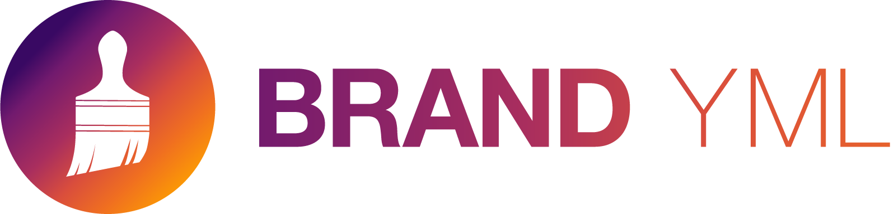

05:00
Quarto
Websites
Basic website
Let’s dive right in!
Get the template
- Start somewhere logical:
- Get the website template:
Get the template
- Follow the prompts:
Terminal
Open the folder:
RStudio: New Project > Existing Directory >
VS Code: File > Open Folder >
Open
index.qmd
Workflow
Preview. Edit. Save. Preview.
Preview
Current page
Cmd/Ctrl + Shift + K
Whole site
Build > Render Website

Requires Quarto Extension
Your turn
Get the starter template. If you’re using Posit Cloud, skip this step and instead open the
whr-websiteproject. If you’re using Codespaces, follow the instructions here, but go to this repo instead.Open
index.qmdand click Render/Preview.Edit
titleindex.qmdYAML to better reflect the site and add asubtitle. Preview.Add some text to
index.qmdexplaining the plot. Preview.
Page Structure
index.qmd
---
title: "Global Happiness"
execute:
echo: false
warning: false
message: false
---
Data from: [World Happiness Report](https://www.worldhappiness.report/).
```{r}
#| label: setup
library(tidyverse)
library(quarto)
library(brand.yml)
whr <- read_csv(here::here("data/whr.csv"))
brand <- read_brand_yml("_brand.yml")
theme_whr <-
theme_brand_ggplot2("_brand.yml") +
theme(
plot.title = element_text(size = 14, face = "bold"),
plot.subtitle = element_text(size = 12)
)
```Webpages are like any other Quarto document:
- Start with a YAML header
- Can include code cells
- Everything else is markdown content
Website Structure
A minimal website has two files: index.qmd and _quarto.yml
index.qmd: Renders toindex.html, your home page._quarto.yml: Controls project and website properties.
When rendered you will get a _site/ folder. This contains everything needed to serve the site.
_quarto.yml
Quarto projects
Our website is a Quarto project.
All Quarto projects include a _quarto.yml file.
This is a Quarto Project.
my-folder/
├── _quarto.yml
├── my-document.qmdThis is not.
my-folder/
├── my-document.qmdQuarto projects
A Quarto project is a directory that provides:
- A way to render all or some of the files in a directory with a single command (e.g.
quarto render myproject). - A way to share YAML configuration across multiple documents.
Why didn’t we need this before?
Only some Quarto outputs require a Quarto project, including:
- websites
- books
- blogs
Navigation
Navbar
Navbar - add a page
Your turn
- Add some information to
about.qmd. - Edit
_quarto.ymlso that the navbar includes the about page. - How do you think you change the position of the links in the navbar? Change them to appear on the right.
04:00
There’s much more!
There are many more options for site navigation, including
- Side navigation
- Navbar tools (e.g., view source on GitHub)
- Navigational breadcrumbs
Theming
Photo by Daniele Levis Pelusi on Unsplash
Built-in theme
Like regular HTML documents and dashboards, you can use a built-in Bootswatch theme.
_quarto.yml
Learn more: https://quarto.org/docs/output-formats/html-themes.html
Style in _quarto.yml
Control basic options like colors and fonts in _quarto.yml.
_quarto.yml
Or…
Deployment
Photo by engin akyurt on Unsplash
Publishing options
There are a variety of ways to publish Quarto documents, presentations, dashboards, and websites.
Learn more: https://quarto.org/docs/publishing/
Posit Connect Cloud
Easily publish and share data applications and documents in a cloud environment within minutes.
Posit Connect Cloud
Publish from:
- GitHub
- Positron with the Publisher extension
- VS Code with the Publisher extension
Posit Connect Cloud
Quarto Pub
Free publishing service for static content created with Quarto.
Learn more: https://quarto.org/docs/publishing/quarto-pub.html
Quarto Pub
Easiest option for today. https://quartopub.com/.
- Run
- Select
Quarto Pub.
Learn more: https://quarto.org/docs/publishing/quarto-pub.html
Your turn
Publish your website to Quarto Pub.
- From the Terminal, run
quarto publish, then selectQuarto Pub. - Follow the prompts to set up an account and publish.
If you have time, publish to Connect Cloud. Note: if you’re using R, you will need an renv.lock file (learn how here) if publishing from Positron or VS Code, or a manifest.json file (learn how here) if publishing from GitHub.
07:00
Making a website from scratch
Learn more: https://quarto.org/docs/websites/